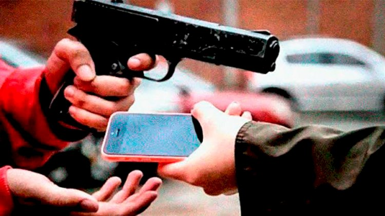
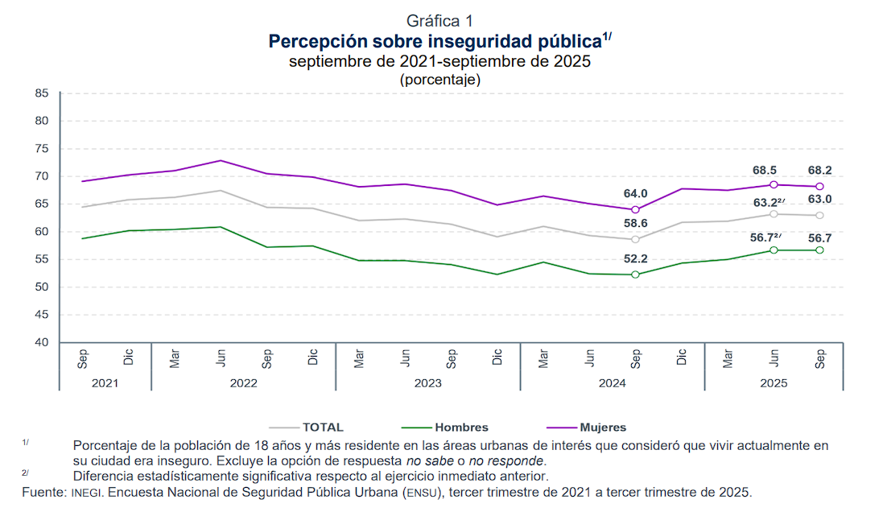

La inseguridad en México
PERCEPCIÓN DE INSEGURIDAD POR TEMOR AL DELITO

Según la Encuesta Nacional de Seguridad Pública Urbana (ENSU), elaborada por el Instituto Nacional de Estadística y Geografía (INEGI), el 63% de la población adulta en zonas urbanas considera inseguro vivir en su ciudad.
Este dato representa un aumento respecto al 58.6% registrado en septiembre de 2024, y ―aunque implica una leve baja frente al trimestre anterior (63.2%) ― confirma que la percepción de inseguridad sigue siendo una preocupación dominante en el país.
La ENSU, que mide trimestralmente la percepción ciudadana sobre seguridad en 91 ciudades mexicanas, revela que más de seis de cada diez adultos viven con miedo constante. Este nivel no se observaba desde finales de 2023, lo que sugiere un retroceso en la confianza ciudadana a pesar de los esfuerzos gubernamentales por reducir los índices delictivos.
En septiembre de 2025, 68.2 % de las mujeres y 56.7 % de los hombres consideraron que vivir en su ciudad era inseguro (ver gráfica 1).

Las cinco ciudades más inseguras de México en el tercer trimestre de 2025
- Culiacan.sinaloa: 88.3%
- Irapuato, Guanajuato: 88.2%
- Chilpancingo, Guerrero: 86.3%
- Ecatepec de Morelos, Estado de México: 84.4%
- Cuernavaca, Morelos: 84.2%
Estas ciudades comparten características comunes: presencia de grupos delictivos, alta incidencia de violencia armada, y una débil percepción de efectividad institucional. En contraste, algunas urbes muestran niveles bajos de inseguridad percibida, lo que evidencia disparidades regionales.
Espacios públicos: los más temidos por la ciudadanía
La inseguridad no se limita al entorno doméstico. La ENSU revela que los espacios públicos son percibidos como altamente peligrosos, afectando la movilidad, el acceso a servicios y la vida social.
- 71.7% cajeros automáticos en la vía pública
- 64.9% en el transporte público
- 64.4% en las calles
- 57.1% en las carreteras
Este clima de inseguridad ha modificado los hábitos cotidianos:
- 40.6% dejó de portar objetos de valor
- 36.9% restringe la salida de menores
- 35% evita caminar de noche cerca de su vivienda
- 22.4% ha reducido las visitas a familiares o amistades
Aunque algunos de estos porcentajes han bajado ligeramente respecto a trimestres anteriores, el impacto en la calidad de vida sigue siendo considerable. El miedo condiciona decisiones diarias, desde el uso del transporte hasta la convivencia social.

¿Menos homicidios, pero más miedo? Estos dicen los datos
Uno de los contrastes más llamativos del informe es entre la percepción ciudadana y las cifras oficiales de delitos. De acuerdo con los datos, el promedio diario de homicidios en México bajó a 59.5 en septiembre de 2025, frente a los 86.9 registrados en el mismo mes de 2024. Esta reducción del 32% coincide con el primer año de gobierno de Claudia Sheinbaum.
Durante ese periodo, las autoridades reportaron:
- Más de 34 mil detenidos por delitos de alto impacto
- Incautación de más de 283 toneladas de droga
Sin embargo, estos avances no se han traducido en una mayor sensación de seguridad. La persistencia del miedo sugiere que la percepción ciudadana responde no solo a estadísticas, sino a experiencias personales, presencia de grupos criminales, y confianza en las instituciones.

Confianza en autoridades: fuerzas armadas vs. policías
La ENSU también mide la confianza en las instituciones encargadas de la seguridad. Los resultados muestran una clara preferencia por las fuerzas armadas, que gozan de mayor legitimidad entre la población.
- Marina: 86.7% de efectividad percibida
- Ejército Mexicano: 83%
- Fuerza Aérea Mexicana: 83.2%
En cambio, las corporaciones civiles obtienen evaluaciones más bajas:
- Policía estatal: 52.7%
- Policía municipal: 46.8%